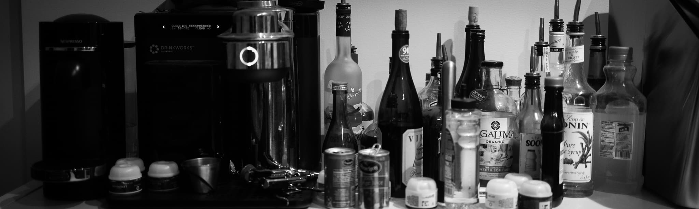
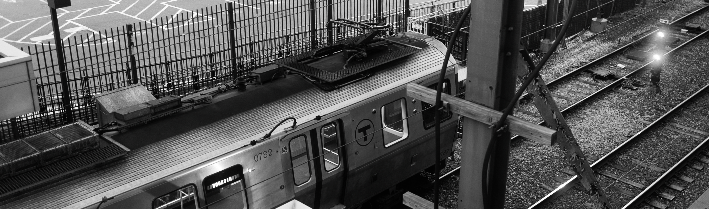
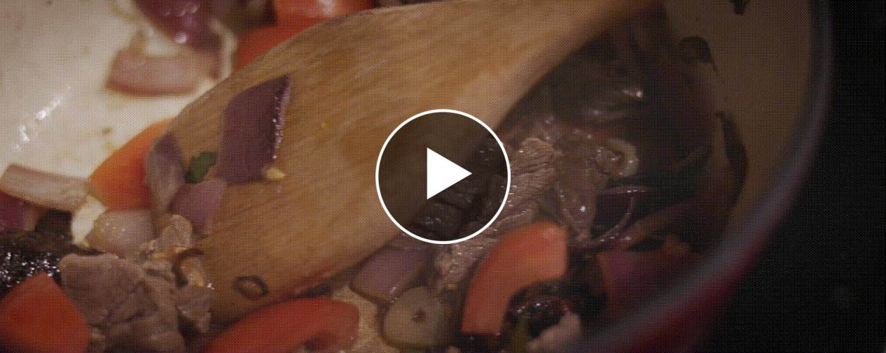

"when i see anything, i see a lot of thing."
- howard finster
- howard finster
.
· vlog snaps ·
· winthrop & logan ·
· boston downtown ·
· private ·
* all shot on canon eos r6 and sony fx3
color graded on lightroom and davinci resolve
** click the image to zoom (might take several secs)
*** desktop chrome is recommended for the best experience
color graded on lightroom and davinci resolve
** click the image to zoom (might take several secs)
*** desktop chrome is recommended for the best experience
.
waves
sun don’t shine in the shade
bird can’t fly in a cage
even when somebody go away
the feelings don’t really go away
that’s just the wave
- ye
bird can’t fly in a cage
even when somebody go away
the feelings don’t really go away
that’s just the wave
- ye
dryft
dryft
500 ocean ave
revere, massachusetts 02151
tel: 1 (781) 629-1842
500 ocean ave
revere, massachusetts 02151
tel: 1 (781) 629-1842
triplethree

宽画幅还是迷人。
不知从什么时候起，我就一直在思考，
电影感，究竟是个什么感？
是给观众更多，还是更少？
不知从什么时候起，我就一直在思考，
电影感，究竟是个什么感？
是给观众更多，还是更少？
侯导说，限制就是自由。
限制多了，选择少了，你就开始专注了。
三点三三的画幅，既有微弱的紧促感，
又有宽屏特有的空旷感。
超宽画幅，
究竟是更多了，还是更少了？
限制多了，选择少了，你就开始专注了。
三点三三的画幅，既有微弱的紧促感，
又有宽屏特有的空旷感。
超宽画幅，
究竟是更多了，还是更少了？

拍摄没有人类出镜的人类物件和聚集场所
有一种熟悉又陌生、温暖又清冷的感觉。
所谓的…
“liminal space”
有一种熟悉又陌生、温暖又清冷的感觉。
所谓的…
“liminal space”

blink
“in my hometown, people have a very romantic name
for the first snow in winter, and it’s called
… the blink.”
for the first snow in winter, and it’s called
… the blink.”
yachtclub

麻省的温斯洛普镇坐落在洛根机场旁，和主跑道
22R、22L、27和33L的接地区相隔一带浅湾，是我拍摄飞机的首要去处。
在数个拍摄点中，科塔公园游艇俱乐部是距离27和33L跑道接地区最近的
一个。每当海上刮西风时，我都会前往科塔俱乐部，拍摄来自遥远欧洲的
国际航班，从一望无际的大西洋地平线远方逐渐显现，带着数百乘客，
轻轻摇晃乘着风，直到在我面前接地。
22R、22L、27和33L的接地区相隔一带浅湾，是我拍摄飞机的首要去处。
在数个拍摄点中，科塔公园游艇俱乐部是距离27和33L跑道接地区最近的
一个。每当海上刮西风时，我都会前往科塔俱乐部，拍摄来自遥远欧洲的
国际航班，从一望无际的大西洋地平线远方逐渐显现，带着数百乘客，
轻轻摇晃乘着风，直到在我面前接地。


在等待航班的空闲时间里，我也会随意拍摄周遭环境、游艇和野生动物。
海鸥活着是为了去码头整薯条，
我们呢？
海鸥活着是为了去码头整薯条，
我们呢？


coughlin
温斯洛普镇的科林公园位于洛根机场27跑道延长线上。
在这能拍摄飞机从头顶几十米上方飞过的壮观照片。
我最爱的是在日落时分来到这里，拍摄绝美的晚霞
在光滑复杂的机身线条间折射出的更加绚烂的色彩。
在这能拍摄飞机从头顶几十米上方飞过的壮观照片。
我最爱的是在日落时分来到这里，拍摄绝美的晚霞
在光滑复杂的机身线条间折射出的更加绚烂的色彩。
airliners


2006年，在第十代微软模拟飞行发布之后不久，我开始自学
航空知识和飞机驾驶，在模拟器里想象自己是一名飞行员。
转眼十年后，2016年的暑假，上海浦东国际机场，美联航
747-400的驾驶舱里，我在摆弄着油门推杆和自动油门按钮，
副驾驶拿着我的摄影机笑嘻嘻地在拍着，飞了30年的机长
老爷子把他的帽子轻轻戴在我的头上说：
“keep up your dreams, son.”
航空知识和飞机驾驶，在模拟器里想象自己是一名飞行员。
转眼十年后，2016年的暑假，上海浦东国际机场，美联航
747-400的驾驶舱里，我在摆弄着油门推杆和自动油门按钮，
副驾驶拿着我的摄影机笑嘻嘻地在拍着，飞了30年的机长
老爷子把他的帽子轻轻戴在我的头上说：
“keep up your dreams, son.”
董先生赠予我的机长肩章和SOP标准飞行手册，
在很长一段时间里都激励着我的小小飞行梦想。
他在海南航空作为飞行教员执飞E190多年，
至今仍在一线飞行。
相信未来自己每次看到这组美联航E190的特写，
都能记得年少时的那份激情。
在很长一段时间里都激励着我的小小飞行梦想。
他在海南航空作为飞行教员执飞E190多年，
至今仍在一线飞行。
相信未来自己每次看到这组美联航E190的特写，
都能记得年少时的那份激情。

JAL7/JL7, Boeing 787-9/B789, BOS/Boston-NRT/Tokyo, “日航大白鹤”
GEnx-1B引擎后整流罩上的波浪形边缘能够降低80%的最大推力噪音
GEnx-1B引擎后整流罩上的波浪形边缘能够降低80%的最大推力噪音

QTR744/QR744, Airbus 350-900/A359, DOH/Doha-BOS/Boston, “oneworld special livery”
这是卡塔尔航空机队第一架带有寰宇一家航空联盟特别涂装的A350XWB
这是卡塔尔航空机队第一架带有寰宇一家航空联盟特别涂装的A350XWB

UAE237/EK237, Boeing 777-300ER/B77W, DXB/Dubai-BOS/Boston, “GE90-115B: the most powerful jet engine”
作为世界上最大的双发喷气式客机，B77W永远是场上的老大哥
他所携带的两颗GE90-115B是世界上推力最强的喷气式发动机
任何一架B77W全推力起飞都是重型机械和暴力美学的极致演绎
作为世界上最大的双发喷气式客机，B77W永远是场上的老大哥
他所携带的两颗GE90-115B是世界上推力最强的喷气式发动机
任何一架B77W全推力起飞都是重型机械和暴力美学的极致演绎
newyear
新年第一天。
每当海上起雾时，我都会放下手头的事，去沙滩上散步。
夏天的时候海水温暖，还会脱下鞋，
缓缓步行到海里几十米远的地方。
站在海浪之中，被海雾的香味环绕，
天和海的边界仿佛就在伸手可及的地方模糊化开。
feels like a dream
每当海上起雾时，我都会放下手头的事，去沙滩上散步。
夏天的时候海水温暖，还会脱下鞋，
缓缓步行到海里几十米远的地方。
站在海浪之中，被海雾的香味环绕，
天和海的边界仿佛就在伸手可及的地方模糊化开。
feels like a dream

总是不自觉望着海鸥，
目光追随它自在地飞入大雾中，
逐渐消失。
有时我会想象自己是它。
desperate is my,
escape
目光追随它自在地飞入大雾中，
逐渐消失。
有时我会想象自己是它。
desperate is my,
escape
christmas
四处溜达，吃吃喝喝的圣诞。
洗洗车、买买礼物、做做饭、蹲蹲机场、
看看ethan，然后第一次用达芬奇的HDR工作流出片。
简单的生活，也有滋有味。
洗洗车、买买礼物、做做饭、蹲蹲机场、
看看ethan，然后第一次用达芬奇的HDR工作流出片。
简单的生活，也有滋有味。

kagami

said kozo kagami: "we should pursue creation of true
value refraining from short-sighted, ephemeral creativity"
and endorsed the idea of “monozukuri-no-kokoro” or passion
for manufacturing excellence. based on this principle the
company intends to continue its relentless efforts to
enhance technologies, skills and commitment in offering
products of high standards of technique and creativity,
bringing hope and brilliance to your life through
long lasting, high-quality glassware.
value refraining from short-sighted, ephemeral creativity"
and endorsed the idea of “monozukuri-no-kokoro” or passion
for manufacturing excellence. based on this principle the
company intends to continue its relentless efforts to
enhance technologies, skills and commitment in offering
products of high standards of technique and creativity,
bringing hope and brilliance to your life through
long lasting, high-quality glassware.
calligraphy

《one more time, one more chance》 by 山崎まさよし
《秒速5センチメートル》主题曲
传统纵书，行书，自右向左阅读
《秒速5センチメートル》主题曲
传统纵书，行书，自右向左阅读

《今、このとき。》 by 柊
《夏目友人帐》主题曲
传统纵书，行草，自右向左阅读
《夏目友人帐》主题曲
传统纵书，行草，自右向左阅读
nights

long wharf
boston, ma
boston, ma


financial district
boston, ma
back in 2018,
when i was living in kendall square,
i took the t for commute everyday.
walking through these buildings, every night
feels slightly different.
the lights, the lines, the temperature, the people
nights in boston are usually too cold
why don’t we make them warmer, then?
boston, ma
back in 2018,
when i was living in kendall square,
i took the t for commute everyday.
walking through these buildings, every night
feels slightly different.
the lights, the lines, the temperature, the people
nights in boston are usually too cold
why don’t we make them warmer, then?

logan international airport
boston, ma
boston, ma

columbus park
boston, ma
boston, ma
canteen

swordfish
dryft
revere, ma
dryft
revere, ma

grilled duck ramen
wagamama
boston, ma
wagamama
boston, ma

braised beef brisket
homemade
revere, ma
homemade
revere, ma
backbay

skin spa new york
284 newbury st
boston, ma
284 newbury st
boston, ma


i didn’t go to that skin care clinic
i just enjoyed the best sunshine in the east coast
i just enjoyed the best sunshine in the east coast
rainbows


rainbows pottery studio is a paint-your-own-pottery
studio in the lovely beacon hill part of boston.
you can choose to color your own pottery plate, cup,
truck, animals, and houses…
me and my little trouble maker have spent some
fabulous hours here, drinking ice tea, brushing pigments,
telling stupid jokes, and laughing until the stomach hurts.
studio in the lovely beacon hill part of boston.
you can choose to color your own pottery plate, cup,
truck, animals, and houses…
me and my little trouble maker have spent some
fabulous hours here, drinking ice tea, brushing pigments,
telling stupid jokes, and laughing until the stomach hurts.


bluehour
在早晨的日出之前和傍晚的日落之后，当太阳位于地平线以下，
天空在夜晚或黎明之前，会变成凉爽纯粹的蓝色。
这就是所谓的“华灯初上”。
蓝色时间通常持续的时间很短，仅在20分钟左右。如梦如幻的蓝色
在阴天里会显得更加浓郁。在蓝色时间中进行拍摄就像是在玩限时
寻宝游戏，每時每刻都充满着未知的乐趣。
天空在夜晚或黎明之前，会变成凉爽纯粹的蓝色。
这就是所谓的“华灯初上”。
蓝色时间通常持续的时间很短，仅在20分钟左右。如梦如幻的蓝色
在阴天里会显得更加浓郁。在蓝色时间中进行拍摄就像是在玩限时
寻宝游戏，每時每刻都充满着未知的乐趣。
blvd

经常在日出时分醒来，会拉开窗帘，
花上十几分钟静静欣赏完海上日出，再回被窝睡回笼觉。
有时惊喜的是一开窗，映入眼帘的不是浓郁的橙青凋，
而是一片静谧的白茫茫。
. 点击大图 .
花上十几分钟静静欣赏完海上日出，再回被窝睡回笼觉。
有时惊喜的是一开窗，映入眼帘的不是浓郁的橙青凋，
而是一片静谧的白茫茫。
. 点击大图 .
negative


胶片时代的底片总是带有一种神秘的魅惑、未知的期待。
有一天我想，能不能试着创造出一种又像底片又像成片的感觉？
这些是傍晚时分我在公寓楼下拍摄的，天空是原始的颜色，
而夕阳映出的建筑的影子则是转换成了底片的反转色。
我特别喜欢这种不真实感。
有一天我想，能不能试着创造出一种又像底片又像成片的感觉？
这些是傍晚时分我在公寓楼下拍摄的，天空是原始的颜色，
而夕阳映出的建筑的影子则是转换成了底片的反转色。
我特别喜欢这种不真实感。